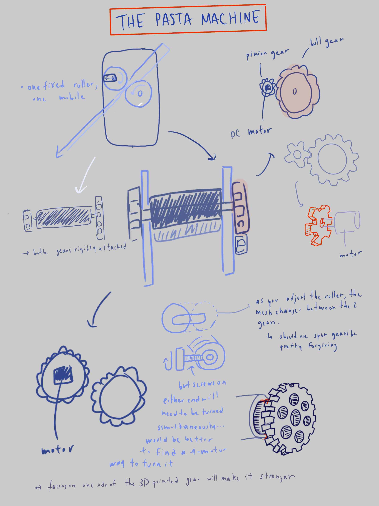

Final Project Proposition: The Pasta Machine

Some considerations:
- To make the gears, I'm thinking that I'll 3D print them - they need to be pretty sturdy and they're large enough that I'm not concerned about precision.
- I'm still trying to work out the horizontal motion of the mobile roller. Maybe if I find a way to really fasten it at a right angle to a joint on one side, and then my moving one side I'll be able to move the entire thing, but this seems kind of difficult.
- Hopefully, I'll be able to hook it up to an app, and make it so that you can plug in the machine. Then, you can write on the app what thickness you are starting with, what you want to end with, and the machine will automatically adjust in between. Optimally, it'd be able to detect when dough is being fed through it, but that seems like something I'd add in later. Another option is obviously to just have the user click a button every time they want to adjust (some sort of up/down button to control the precision by set increments, and an option to type in the exact thickness). Probably easier to start with this.
- Again, the horizontal motion is going to be a pain. I could use capacitance sensors to try to implement the distance measuring, but it might be easier to just calibrate whatever method I'm using and work off of that.
- I've been looking at other pasta machines, and a lot of them have 'scrapers' that help clean the rollers of dough as they turn. I think I might try to make some, maybe out of thin sheets of metal, but that will obviously be difficult to manipulate with my current setup.
Materials:
- I'm using 1 1/4 inch PVC pipes for the roller. Optimally, it'd be stainless steel or copper or something more foodsafe, but I can't really manipulate that.
- The gear parts will be 3D printed, and there are 4 gears: one attached to the motor (hoping to incorporate the motor coupler and the gear in the same 3D printed piece), and three others. They need to mesh in groups of 2. They will all be spur gears, for simplicity (I considered helical gears but that also seems too complicated, and I want a lot of flexibility with the mesh.)
- I'm going to use 2 blocks of pine for the sides, it will be easy to drill holes and attach components. And easy to find!
- I'll be using some tire rods to hold the sides together, along with some nuts. Not necessarily the most beautiful solution (it'd be nicer to take a rod of stainless, size it exactly, thread it, and drill a screw into it to fasten), but it's easy!
Here is a download of the fusion 360 design file:
dowload here